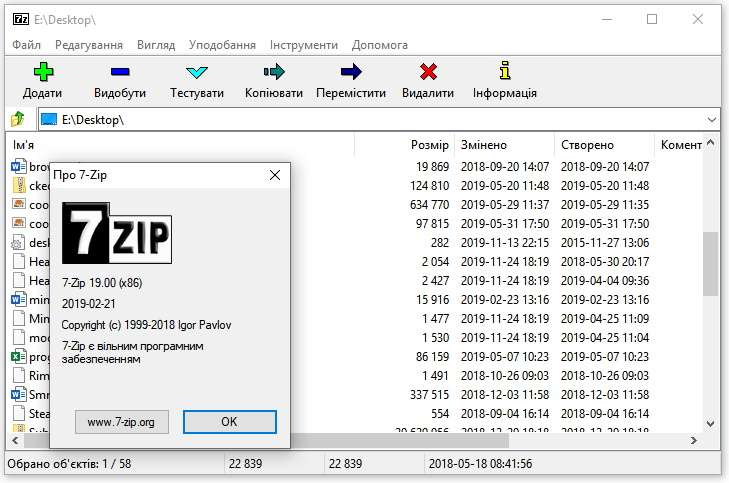

7-Zip
Поделиться:
Описание:
7-Zip - отличный архиватор для Windows к достоинствам которого можно смело отнести комфортную скорость работы, поддержку всех современных форматов и высокую степень сжатия (для форматов ZIP и GZIP, программа предлагает сжатие которое в 2-10 % лучше чем сжатие предоставляемое архиваторами PKZip и WinZip). Приложение интегрируется в Проводник Windows. Присутствует версия для командной строки и плагин для FAR Manager, который позволяет работать с архивами без внешних архиваторов.
Возможности 7-Zip :
CPIO, DEB, DMG, HFS, ISO, LZH, LZMA, MSI, NSIS, RAR, RPM, UDF, WIM, XAR и Z
Операционные системы:
